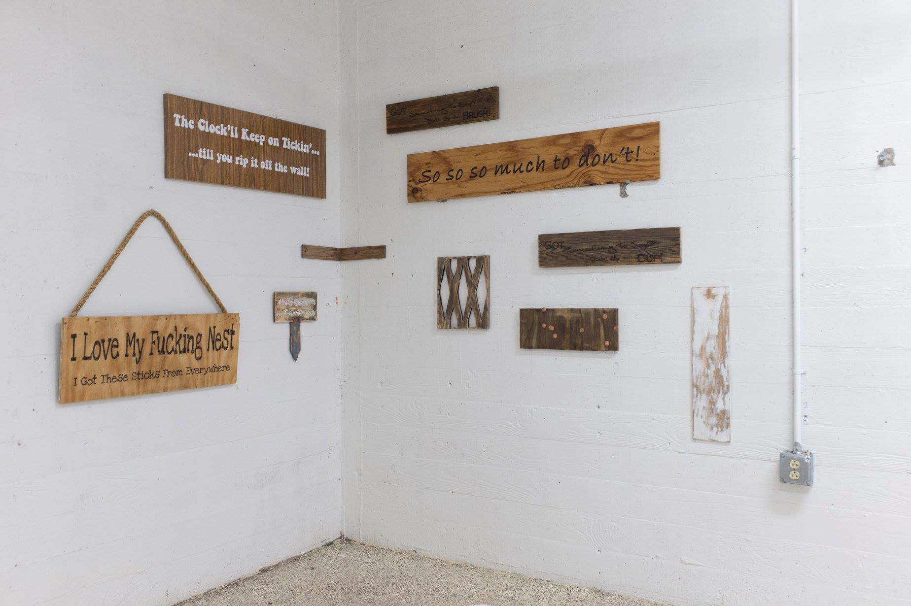

ALEX
In the light of the polarization of institutional and social fields, as addressed by Poledna and
HOiler, the exhibition design for The making of offered a starting point at the end of the 1990s
for reworking apparently stagnating institution-critical practices-including criticism of these
practices themselves-by virtue of a broadly framed discourse on the reciprocal relationship
between processes of corporatization and shifting modes of labor and production. As far as the
visibility of non-artistic, that is, industrial and standard )>labor« in the context of the Generali
Foundation is concerned, here, too, a link can be made to what Poledna envisioned as the
»interrelations betwCcn architecture, corporate design, and institutional self-portrayal., In
the interview quoted above, the artist noted that the ceiling ))actually displays an outside of
this relatively hermetic space of the Generali Foundation: ))After the dismantling of the ceiling
panels the room evokes the image of an industrial shed, or backyard industry. On the lot where
the foundation is now situated, there was originally a shed in which hats were produced. My
concern was to advance other images against the original appearance of an architecture which
oscillates between a supposedly pragmatic understanding of classical modernism and a certain
late-eighties look.

Alex's Website
For example, lets say you have a directory full of archives, containing sub-directories and files. Deleting each item individually from the Finder or the command line can take a long time. So just run the command like this:
rm -R Archives
Remember, this deletion is final. But, as you probably suspect, you can use the -i flag for protection:
rm -iR Archives
This will ask you to confirm the deletion of each item. This can be annoying, but unless you’re really sure you want to delete all those files, it’s probably best to be safe.